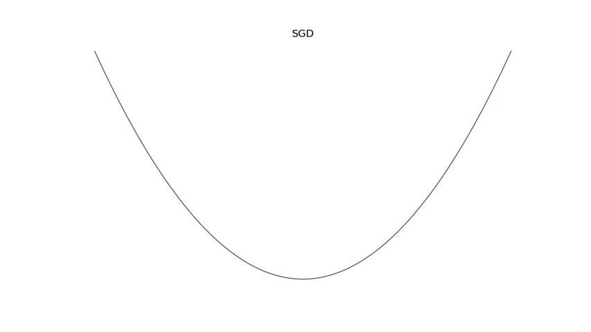
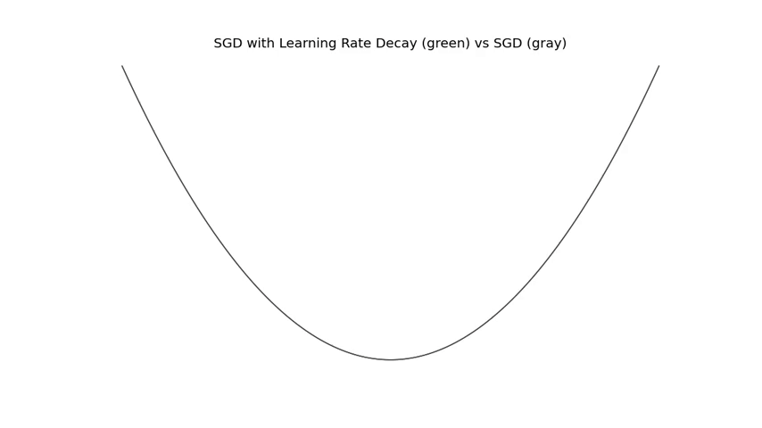
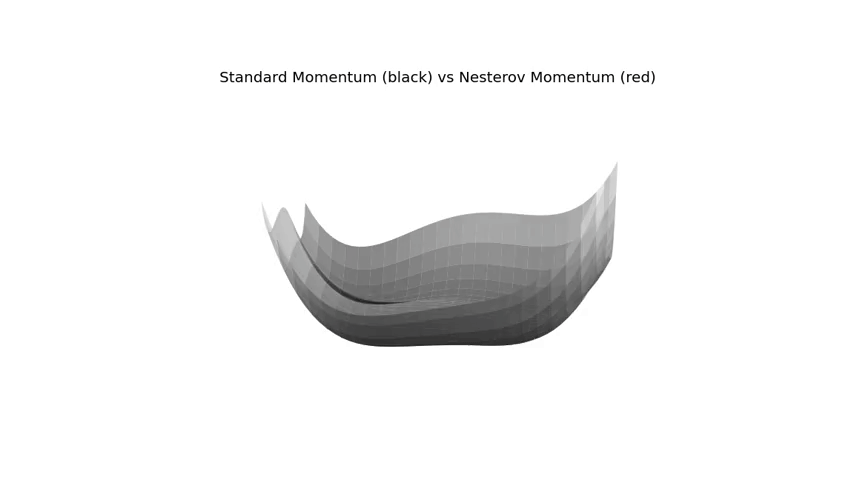
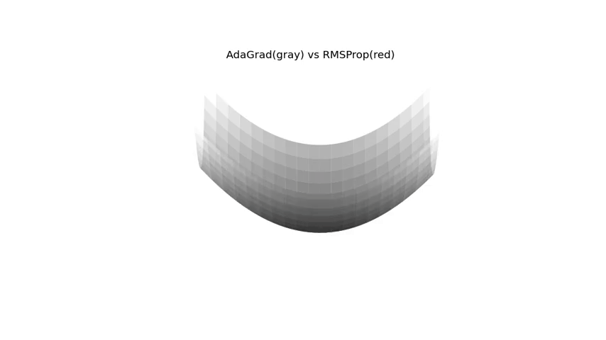
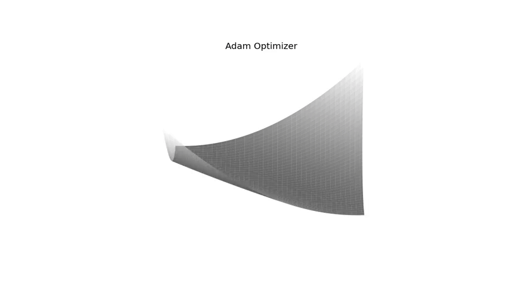

Having a strong intuition about algorithms are helpful for hacking and quick prototyping. For me, the most useful tools for grasping good intuition are visualizations and analogies.
Basic Optimization Algorithms
What is an optimizer? It is how we are updating the parameters. The objective is finding a set of \(\theta\) values so that \(J(\theta)\) is significantly lower. Starting with a relatively simple one:
Stochastic Gradient Descent
The most critical parameter is the learning rate. The higher the learning rate is, the higher the step size taken.
Implementation:
- \(\theta\) is the parameter to learn.
- \(\epsilon\) is the learning rate. a hyperparameter.
do iteratively:
1. Compute gradients and set it to \(g\).
3. Apply update: \(\theta \leftarrow \theta - \epsilon g\)
Below is the update steps with a fixed learning rate:

One way of making the learning faster is Decaying the Learning Rate:
Implementation:
The learning rate is decayed until the iteration \(\tau\).
The learning rate on the iteration \(k\) calculated as \(\epsilon_k=(1-\alpha)\epsilon_0+\alpha \epsilon_{\tau}\) where \(\alpha = \frac{k}{\tau}\)
The learning rate after the iteration \(\tau\) is kept constant.
\(\epsilon_{\tau}\) is generally set to 1 % of the initial learning rate (\(\epsilon_0\)).
Below animation is the update steps with a decaying learning rate applied. The initial learning rate is set to a higher value than the one in the previous example, but it is decayed after some iteration.

Momentum
Momentum is one technique for accelerating learning.
Momentum requires a new hyperparameter: \(\alpha\) which controls the acceleration. It is a common practice to pick a value of 0.9, 0.95, or 0.99. It doesn’t have to be a fixed value but can be adapted in the training process.
Implementation:
- \(\theta\) is the parameter to learn.
- \(\epsilon\) is the learning rate. a hyperparameter.
- \(\alpha\) controls the
ration. a hyperparameter.
- \(v\) is the velocity and it is initially set to 0. a hyperparameter.
do iteratively:
1. Compute gradients and set it to \(g\) .
2. Compute velocity update as \(v \leftarrow \alpha v − \epsilon g\)
3. Apply update: \(\theta \leftarrow \theta + v\)
Here is an animation in a 3D surface:

The problem of oscillations:
Applying momentum can result in too
oscillations. As you can see in the above illustrations, there many U-turns and spirals around local/global minimum points. Nesterov Momentum is reducing those oscillations.
Nesterov Momentum
The difference between the standard Momentum and the Nesterov momentum algorithms is where the gradients are calculated.
In the Nesterov Momentum, gradients are evaluated after the current velocity is applied.
Implementation:
- \(\theta\) is the parameter to learn.
- \(\epsilon\) is the learning rate. a hyperparameter.
- \(\alpha\) controls the acceleration. a hyperparameter.
- \(v\) is the velocity and it is initially set to 0. a hyperparameter.
do iteratively:
1. Apply and interim update \(\tilde{\theta} \leftarrow \theta + \alpha v\)
2. Compute gradients (at interim point) with parameter \(\tilde{\theta}\) and set it to \(g\).
3. Compute velocity update as \(v \leftarrow \alpha v − \epsilon g\)
4. Apply update: \(\theta \leftarrow \theta + v\)
Below is a visualization of the standard momentum (black) vs Nesterov momentum (red).
The Nesterov Momentum is not oscilating much comparing to the standard Momentum algorithm.

Optimizers with Adaptive Learning Rates
AdaGrad
It is simple. We keep putting on the breaks on the descending hills, and we don’t put too many on the plateaus.
Technically speaking:
- A small decrease in the learning rate when the partial derivative is small.
- A rapid decrease in the learning rate when the partial derivative is large.
One issue:
The accumulation of the gradients from the beginning is resulting in an excessive decrease in the learning rate.
It works fine in a convex function, but it might be stuck in local minimums in non-convex settings.
The next algorithm, RMSProp will handle this issue.
Implementation:
- \(\theta\) is the parameter to learn.
- \(\epsilon\) is the learning rate. a hyperparameter.
- \(\delta\) small constant for numerical stability (for avoiding division by zero). a hyperparameter.
- \(r\) gradient accumulation variable. Initially 0.
do iteratively:
1. Compute gradients and set it to \(g\).
2. Accumulate squared gradient: \(r \leftarrow r + g \odot g\)
3. Compute update: \(\Delta \boldsymbol{\theta} \leftarrow-\frac{\epsilon}{\delta+\sqrt{\boldsymbol{r}}} \odot \boldsymbol{g}\)
4. Apply Update: \(\boldsymbol{\theta} \leftarrow \boldsymbol{\theta}+\Delta \boldsymbol{\theta}\)
RMSProp
RMSProp is not taking the entire history but the recent ones. Here is a comparison of AdaGrad (gray) and RMSProp (red):
Implementation:
- \(\theta\) is the parameter to learn.
- \(\epsilon\) is the learning rate. a hyperparameter.
- \(\rho\) is the decay rate.
- \(\delta\) small constant for numerical stability (for avoiding division by zero). a hyperparameter.
- \(r\) gradient accumulation variable. Initially 0.
do iteratively:
1. Compute gradients and set it to \(g\).
2. Accumulate squared gradient: \(r \leftarrow \rho r+(1-\rho) g \odot g\)
3. Compute parameter update: \(\Delta \boldsymbol{\theta}=-\frac{\epsilon}{\sqrt{\delta+\boldsymbol{r}}} \odot \boldsymbol{g}\)
4. Apply Update: \(\boldsymbol{\theta} \leftarrow \boldsymbol{\theta}+\Delta \boldsymbol{\theta}\)

Adam
And, finally Adam. More or less, it covers most of the ideas the previous algorithms have to offer. It is my default choice in training machine learning models.
Implementation:
- \(\theta\) is the parameter to learn.
- \(\delta\) small constant for numerical stability (for avoiding division by zero). a hyperparameter.
- \(\epsilon\) is the learning rate. a hyperparameter.
- \(\rho1\) and \(\rho1\) are the decay rates.
- \(s\) and \(r\) are the first and the second variables. Initially both of them are 0.
do iteratively:
1. Compute gradients and set it to \(g\).
2. \(t \leftarrow t+1\)
3. Update biased first moment estimate: \(s \leftarrow \rho_{1} s+\left(1-\rho_{1}\right) \boldsymbol{g}\)
4. Update biased second moment estimate: \(\boldsymbol{r} \leftarrow \rho_{2} \boldsymbol{r}+\left(1-\rho_{2}\right) \boldsymbol{g} \odot \boldsymbol{g}\)
5. Correct bias in first moment: \(\hat{\boldsymbol{s}} \leftarrow \frac{\boldsymbol{s}}{1-\rho_{1}^{t}}\)
6. Correct bias in second moment: \(\hat{\boldsymbol{r}} \leftarrow \frac{\boldsymbol{r}}{1-\rho_{2}^{t}}\)
7. Compute Update: \(\Delta \boldsymbol{\theta}=-\epsilon \frac{\hat{\boldsymbol{s}}}{\sqrt{\hat{\boldsymbol{r}}}+\delta}\)
8. Apply Update: \(\boldsymbol{\theta} \leftarrow \boldsymbol{\theta}+\Delta \boldsymbol{\theta}\)
Here is an animation. Moving like a snake:
